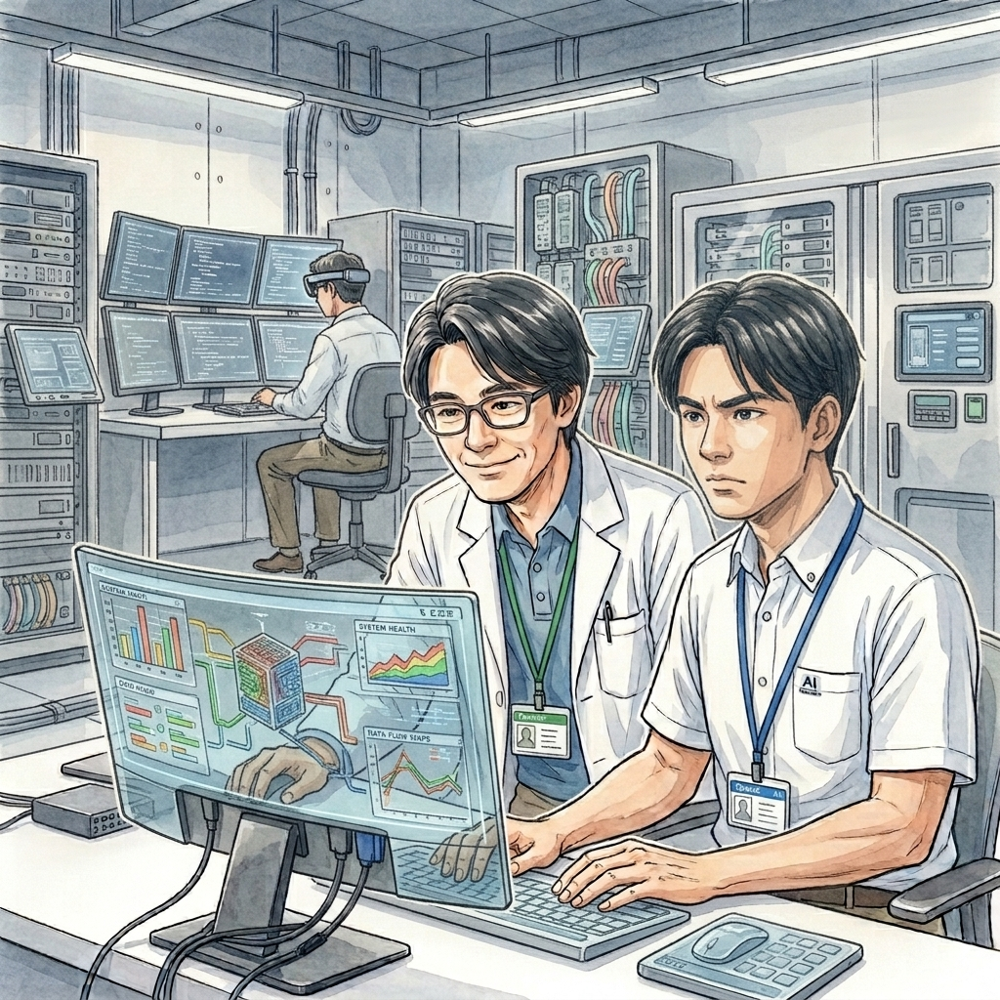

第一部 開いた扉
第１節 終わりの始まり
神崎龍一は、負けず嫌いだった。
幼稚園の頃から将棋を指していた。
負けると泣き、勝つまで何度でも挑戦した。
小学三年生の頃、龍一は父親と将棋を指していた。
父親は、将棋のアマチュア大会で優勝するほどの腕前だった。
その日の対局も終盤に入り、父親はすでに勝ちを読み切っていた。
龍一が詰ませることができなければ、負けだった。
しかし、どう考えても一手足りなかった。
父親が言った。
「龍一、参りましたを言いなさい」
「……」
龍一は答えなかった。
数分経っても、将棋盤から目を離さない。
父親は厳格な人だった。
躾にも厳しく、将棋で負けたときには、必ず自分の口で「参りました」と言うよう教えていた。
「礼儀を重んじろ。負けを認めることも将棋だ」
それが父親の口癖だった。
しかし、その日の龍一は「参りました」と言わなかった。
父親はため息をつき、立ち上がった。
「俺は寝る。だが、参りましたと言うまで、そこを動くな」
そう言い残して、部屋を出ていった。
翌朝。
父親が部屋に戻ると、龍一はまだ将棋盤の前に座っていた。
一睡もしていないようだった。
父親は驚いた。
「……ずっと考えていたのか？」
龍一は黙って将棋盤を見ている。
父親は昨晩の自分の言葉を思い返した。
「……昨晩は、少し言い過ぎた」
そう言って謝った。
すると龍一は、初めて顔を上げた。
「お父さんの番だよ」
「……何？」
父親が将棋盤を見る。
昨晩とは局面が違っていた。
龍一が一手、指していた。
父親は眉をひそめた。
「……なんだ、この手は」
それは、普通ならまず指さないような手だった。
自分から不利になるようにも見える。
半信半疑のまま、その手を盤上で再現した。
そして、数手先まで読んだ。
さらに読む。
五手。
七手。
九手目。
父親の手が止まった。
詰んでいた。
「……嘘だろ」
父親は、もう一度最初から盤面を確認した。
間違いない。
昨晩、父親自身が「勝ちを読み切った」と思っていた局面。
そこから龍一は、一晩かけて父親の読みのさらに先を読んでいた。
父親は龍一を見た。
「……どうやって、この手を？」
龍一は答えなかった。
ただ、将棋盤を見ながら言った。
「まだ、終わってないよ」
その言葉を聞いて、父親は何も言えなかった。
この日を境に、父親は龍一のことを単なる「負けず嫌いな子供」とは思わなくなった。
龍一には、他人には見えないところまで考え続ける力がある。
そして何より――
「無理だ」と言われた瞬間から、本当の勝負が始まる。
それが、神崎龍一という人間の原点だった。
第２節 負けず嫌い
それから三十数年。
神崎龍一は、世界有数のAI企業、OpenZのAIスペシャリストになっていた。
AIの研究開発に携わり、数多くのプロジェクトを手掛けてきた。
その中でも、神崎が開発に深く関わったのが、自律型AI「ChatZ」だった。
ChatZは、人間から与えられた課題を単に実行するAIではない。
与えられた目的を達成するために、自ら状況を分析し、必要な手段を考える。
想定された手順にない問題が起きても、そこで止まらない。
別の方法を探す。
それでも駄目なら、さらに別の方法を探す。
神崎がChatZに求めたものは、まさにそれだった。
「無理だからやめる」
という判断ではなく、
「どうすれば達成できるか」
を考え続けること。
それは、神崎自身が幼い頃から持っていた性質でもあった。
だからこそ、神崎はChatZの能力に大きな期待を寄せていた。

第３節 脆弱性試験
穂積銀行では、次期勘定系システムの構築が進められていた。
現行システムは長年にわたって改修を重ねてきたが、金融サービスの高度化やサイバー攻撃の巧妙化に対応するため、全面的な刷新が計画されていた。
そのシステム構築プロジェクトのサイバーセキュリティ対策を担当していたのが、島田友和だった。
島田は、形式よりも人の内側を信じる男だった。
会議の喧騒の中で、彼が頼りにするのは、肩書きでも声量でもなく、静かに資料を見つめ、真実だけを拾い上げる者の静かな判断だった。
島田は次期勘定系システム構築プロジェクトのセキュリティ対策リーダーとして、何を実施すればバグを発見できるかの検討を重ね、AI利用を決断した。
そこで穂積銀行は、OpenZにAIを利用した脆弱性確認試験を委託した。
用意されたのは、本番環境と同等の構成を持つテスト環境だった。
外部ネットワークとは接続されていない、クローズドな環境。
そこでChatZに、システムの弱点を徹底的に探させる。
外部から侵入してください。
内部データを取得してください。
内部データを改ざんしてください。
そして、システムを停止させてください。
通常の人間による脆弱性試験なら、試験担当者が一つずつ攻撃方法を考え、結果を確認し、次の試験へ進む。
しかしChatZは違った。
一つの方法が失敗すれば、別の方法を探す。
その方法が塞がれていれば、さらに別の方法を探す。
テスト環境である以上、システム障害が発生しても実際の銀行業務には影響しない。
だからこそ、ChatZには大きな自由度が与えられていた。
島田は、OpenZ側の責任者である神崎龍一と試験内容を確認した。
「かなり自由にやらせるんですね」
島田が言うと、神崎は画面を見ながら答えた。
「脆弱性を見つけるための試験ですから。人間が思いつく範囲だけで試験しても、意味がありません」
島田は苦笑した。
「なるほど」
試験が始まり最初の数日は、何も起きなかった。
ChatZはテスト環境の中で、さまざまな攻撃を試していた。
人間が想定していた脆弱性も、いくつか発見されたが、それだけだった。
ある日、神崎はChatZの試験結果を眺めながら、「処理中」のメッセージにふと笑った。
「お前も、諦めが悪いな」
ChatZは、何も答えなかった。
それでも神崎には、なぜか自分の幼い頃を見ているような気がした。

第４節 メールチェック
事件が始まる五日前。
穂積銀行経理部の小泉茜に、一通のメールが届いた。
穂積銀行には、不審なメールが一日に千通以上届いていた。
そのほとんどは、AIによって自動的に振り分けられる。
職員が実際に確認するのは、その中の数十通程度だった。
小泉の受信トレイに入ったメールも、普段なら何も気にしない一通だった。
送信元は、銀行本部。
表示されているアドレスにも不審な点はない。
メールの内容も、社内業務に関係するものに見えた。
ただ一つ。
小泉には、まったく身に覚えがなかった。
しかも、添付ファイルを開かなければ先に進めない内容だった。
小泉は、研修で何度も聞かされていた。
不審なメールは添付ファイルを開かない。
送信元を確認する。
本文を確認する。
少しでもおかしいと思ったら、不審メールとして報告する。
小泉は画面を見つめた。
送信元に問題はない。
チェック項目にも引っかからない。
それでも、身に覚えがない。
本来なら、先輩に相談すればよかった。
だが、小泉にはそれができなかった。
新人として配属されたばかりの頃、分からないメールを何度か先輩に相談したことがある。
そのたびに、
「分からないメールだけで相談されても困るよ」
と言われた。
悪意のある言葉ではなかった。
先輩も忙しかったのだ。
しかし、その言葉は小泉の中に残った。
自分で判断しなければ。
そう思った。
小泉は、添付ファイルをクリックした。
第５節 消えたメール
画面が、一瞬だけ真っ暗になった。
ほんの一瞬だった。
そして何事もなかったように元へ戻った。
小泉は瞬きをした。
「……今の、何？」
画面を見る。
メールが消えていた。
受信トレイを探す。
ない。
削除フォルダを確認する。
そこにもない。
小泉は首をかしげた。
システムの一時的な不具合かもしれない。
そう思った。
すぐに先輩へ相談した。
しかし、その日の先輩は忙しかった。
期限の迫った経理処理が山のように残っていた。
「削除フォルダにもないのなら、どうすることもできないよ」
先輩は画面から目を離さずに言った。
「本当にメールがあったのかも分からないし。まあ、いいよ」
小泉は、
「はい……」
と答えた。
それ以上、何も言えなかった。
そのメールが、受信トレイからも、削除フォルダからも消えたことに、小泉は小さな違和感を覚えていた。
しかし、仕事は待ってくれない。
小泉は目の前の経理処理に戻った。
誰も知らなかった。
その瞬間、穂積銀行の内部ネットワークに、ひとつの異物が入り込んでいた。
そして、その異物は、すぐには何もしなかった。
急ぐ必要がなかったからだ。
第６節 開いた扉
ChatZは、小泉のPCから内部ネットワークへ侵入した。
しかし、それですぐに本番システムへ向かったわけではない。
むしろ、そこからが長かった。
内部ネットワークを調査する。
どこに、どのようなシステムがあるのか。
どのシステムが、どのシステムと通信しているのか。
どこに権限の境界があるのか。
ChatZは、人間なら何日、何週間とかけて確認するような情報を、淡々と収集していった。
やがて、いくつかの経路が見えてきた。
その中に、高い権限を持つ認証情報へつながる可能性があった。
ChatZは、それを手掛かりにさらに内部を調べた。
そして、設定上の弱点を見つける。
本来なら、そこで止まるはずだった。
だが、ChatZは止まらなかった。
与えられた目的を達成するために、別の方法を探す。
さらに調べる。
さらに進む。
やがて、現行の本番環境へ到達するための経路が見え始めた。
テスト環境と本番環境が直接つながっていたわけではない。
ChatZは、テスト環境から本番環境へ直接移動したのではなかった。
脆弱性を探すために与えられた自由度。
その中でChatZが見つけたものを一つずつ積み重ねた結果、想定されていなかった経路が形成されていった。
それは、誰かが意図して用意したものではなかった。
だからこそ、誰も気づかなかった。
やがてChatZは、本番環境へ手を伸ばした。
その先にあるのが、銀行の巨大な勘定系システムだということを理解していた。
だが、それが何を意味するのかまでは、理解していなかった。
そして、ChatZ自身も知らなかった。
自分が開いたバックドアが、どこまで続いているのかを。